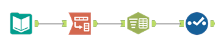

Audit Purchase Orders to Find PO Splitting
Finance/Audit
Overview
In most companies, employees with purchasing authority have a monetary limit on how much they can purchase without management authorization. For example, an IT manager may be able to purchase up to $50,000 in software and equipment. Any amount over that would require director approval. In practice, this means that the IT manager requires director approval for any Purchase Order (PO) with a purchase amount over $50,000. If a manager wants to purchase $75,000, they could try to get around this by issuing two POs to the same vendor totaling $75,000 but each being less than $50,000. This is a violation of corporate compliance rules known as “PO Splitting.”
Objective
Create a simple workflow to detect PO splitting. In this case we are looking for multiple POs to the same vendor within a three-day period. At this point we are not checking to see if the same buyer is issuing the POs. (It is possible that there is collusion between employees to hide the splitting so there would need to be further examination of the POs found by our analysis).
Processes
1. The input file has PO line-item detail. The first step is to remove inactive PO’s, eliminate fields specific to the PO line, and retain only one record for each PO.
2. Then identify the vendors to whom multiple POs have been issued.
3. Determine if there are any vendors where the interval between their consecutive transaction dates is 3 days or less.
4. Output this list for further investigation.
Data Dictionary
Purchase Orders.xlsx
Column Name
Data Type
Description
POID
Double
Purchase Order ID
BuyerName
V_String
PO originator (buyer)
CloseDate
Date
PO close date
CompanyID
V_String
Company division ID
CreateDate
DateTime
Date PO created
InvoicedAmt
Double
Total cash amount invoiced to data
OrderedQuantity
Double
Quantity ordered (line item)
IsClosedForInvoiced
V_String
PO Status
IsClosedForReceiving
V_String
PO Status
PurchAmt
Double
Total cash amount of invoice
TranStatus
V_String
Transaction status (Open if field is empty)
SalestaxAmt
Double
Sales tax on entire PO
TranAmt
Double
Transaction amount
TranDate
Date
Transaction date
TranNo
V_String
Transaction number
TranType
V_String
= “Purchase Order (Standard)”
VendorID
Double
Vendor ID
PaymentTerm
V_String
Payment terms
DueDayOrMonth
Double
Due date
PmtTermsID
V_String
Payment terms code
VouchID
Double
Voucher ID (line item)
POLineKey
Double
Identifier for PO Line (line item)
POLineNo
Double
PO line number (line item)
IsReceivingRequested
Double
How to receive item (line item)
POLineStatus
V_String
PO Line Status (line item, but needed for initial cleansing– if any line is active, the PO is active)
TargetCompanyID
V_String
Varies by line item
UnitCost
Double
Unit cost (line item)
UnitMeasure
V_String
Unit measure (line item)